TI Drivers Quick Start¶
The TI Drivers interface contain the APIs, data structures and macros that the application uses. These interfaces are the same for all SimpleLink Devices.
This section describes how to import and build an existing project and
references the TI Drivers empty project. All of TI Drivers projects included
in the development kit have a similar structure.
The TI Drivers component of the SimpleLink CC26x2 SDK provides no RTOS, TI-RTOS and FreeRTOS based examples. TI-RTOS and FreeRTOS examples have the word “tirtos” or “freertos” in the project name.
Every RTOS example has a README.html that details the Example Application Design Details and how each example works. This feature will soon be added to the No RTOS based examples. The README.html can be viewed in Resource Explorer on dev.ti.com/tirex or as shown below in CCS:
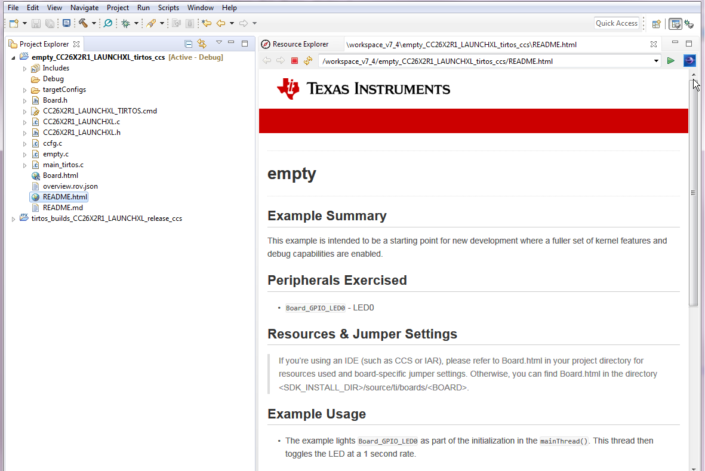Figure 10. empty Project README
Using TI Drivers Projects with CCS¶
Importing TI-RTOS and FreeRTOS examples will also import kernel projects in the same workspace. The kernel project is a dependent project and will be automatically built when the example is built. For more details and how change configurations look at the SimpleLink CC26x2 SDK User’s Guide.
Import Project Using Resource Explorer¶
A quick and easy way to start working with the SDK is to use the TI Resource Explorer on dev.ti.com/tirex. Step by step instructions are available here.
Import Project Using Import Wizard¶
Open CCS
Choose Project -> Import CCS Projects from the menu.
Select the Browse button in the Import CCS Projects dialog and select the directory
<SDK_INSTALL_DIR>/examples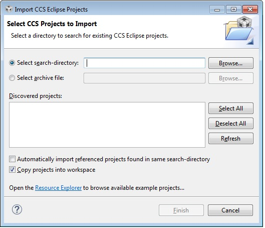Figure 11. CCS Import Wizard
CCS discovers both CCS and GCC based examples.
Select the TI Drivers Example Project you would like to use. In this example,
empty_CC26X2_LAUNCHXL_tirtos_ccsis chosen but the import and build instructions apply to any TI Drivers CCS example project in the SimpleLink CC26x2 SDK. Click Finish to import theemptyproject and its associated kernel project.
Build and Download Project¶
Optional: If you wish to use FreeRTOS, you must specify the location of the FreeRTOS installation.
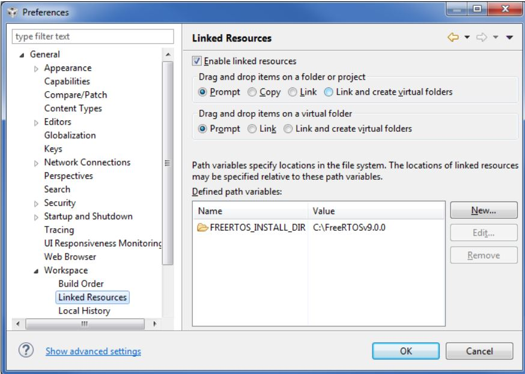Figure 12. CCS FreeRTOS Setup
Connect your CC26x2 LaunchPad with the provided Micro USB cable.
Click the build and download icon in CCS. The RTOS build for the first time takes a couple of minutes.
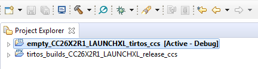Figure 13. Build & Download a Project in CCS
The XDS110 may require a firmware update. If a firmware update is requested, click Update.
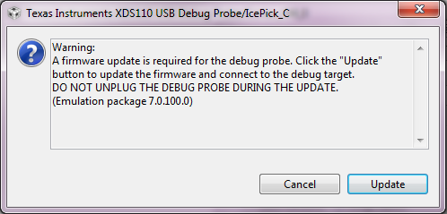Figure 14. Build & Download a Project in CCS
Once the debugging session opens, click the Green Play button. The red LED should begin blinking. Continue on to the Running the Demo section for more information about using the
emptyproject.
Using TI Drivers Projects with IAR¶
When using RTOS based Projects in IAR, note that the RTOS(kernel) build is a dependent project which is automatically pre-built before the example project builds.
The RTOS kernel(TI-RTOS or FreeRTOS build) project is linked to the workspace but the Example Project is copied into the workspace. So the RTOS kernel needs to be built only once within the scope of the SDK but each workspace has its own copy of the example project.
For noRTOS Projects - There is not RTOS(kernel) build dependent project imported into the workspace
Before starting to work with any of the TI Drivers projects in the SDK, you need to load a set of variables that will be set for your current workspace.
Select Tools -> Configure Custom Argument Variables
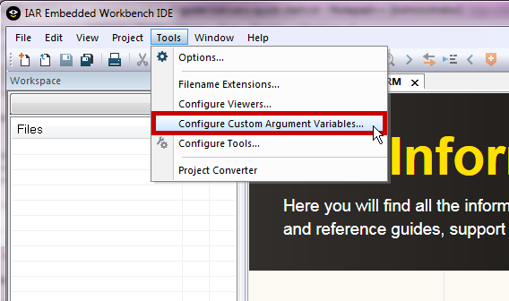Figure 15. Configure Custom Argument Variables
Select the Global tab, then click Import..
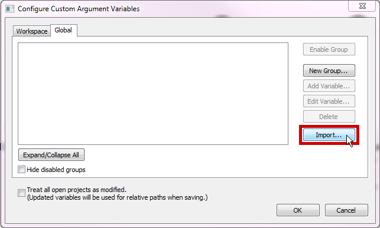Figure 16. Import Global Argument Variables
3. Import the custom argvars from the SDK. The argvars are stored in a
SIMPLELINK_CC13XX_CC26XX_SDK.custom_argvars file, which is located in the
tools/iar directory of the SDK
(<SDK_INSTALL_PATH>/tools/iar/SIMPLELINK_CC13XX_CC26XX_SDK.custom_argvars)
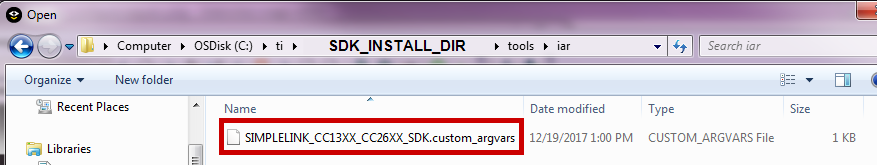Figure 17. Custom Argvars Location
4. You can open
(<SDK_INSTALL_PATH>/tools/iar/SIMPLELINK_CC13XX_CC26XX_SDK.custom_argvars)
in a text editor if you need to modify the default path argument variables.
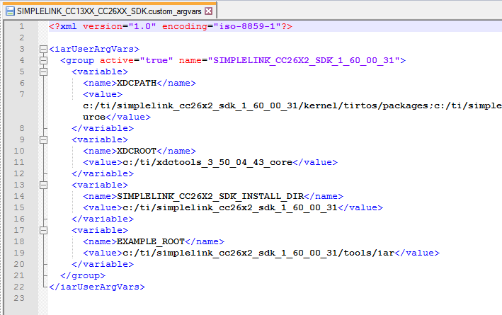Figure 18. Default Path Argument Variables
- Restart IAR
Import Project Using Workspace¶
All TI Drivers Example Projects that are shipped with the SimpleLink CC26x2 SDK come with an IAR workspace. Double-Clicking the specific workspace from a Windows Explorer window allows you to open the project on disk and build it.
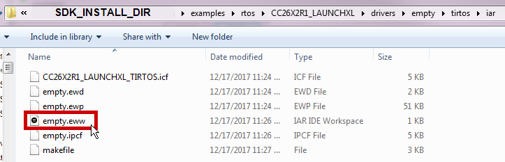Figure 19. Open Workspace from Windows Explorer
Import Project From Information Center¶
In the IAR-IDE go to the
Helptab and click onInformation Center.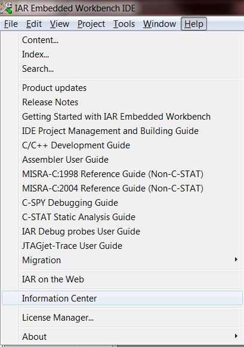Figure 20. Open Information Center
In the new
IAR Information Center for ARMwindow, click onIntegrated Solutions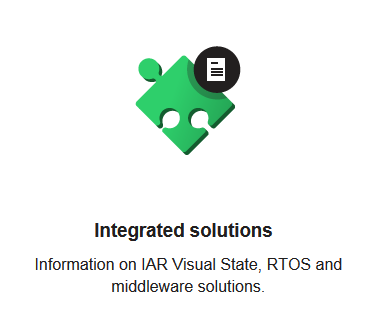Figure 21. IAR Information Center
Click on
Exampleprojects underTexas Instruments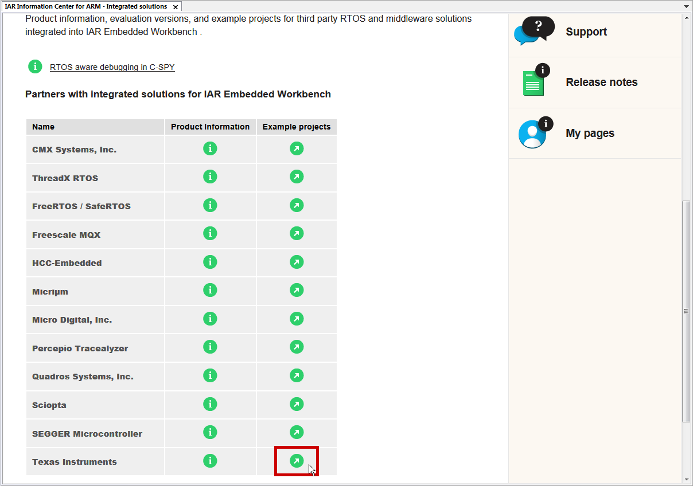Figure 22. IAR Integrated Solutions
Click on example applications link
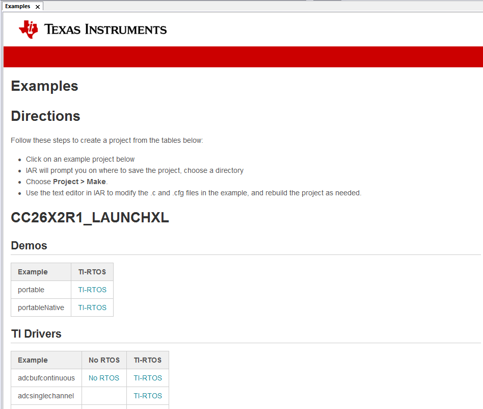Figure 23. SimpleLink SDK Examples
This Examples page contains information on how to create a new project, and links to import example projects
Scroll through the page and click on the project you are interested in. In this example, we will use the
emptyTI Drivers project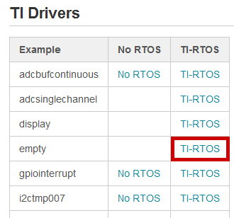Figure 24. Import Example
When prompted, click
Yesto save a copy of the project workspace,Nootherwise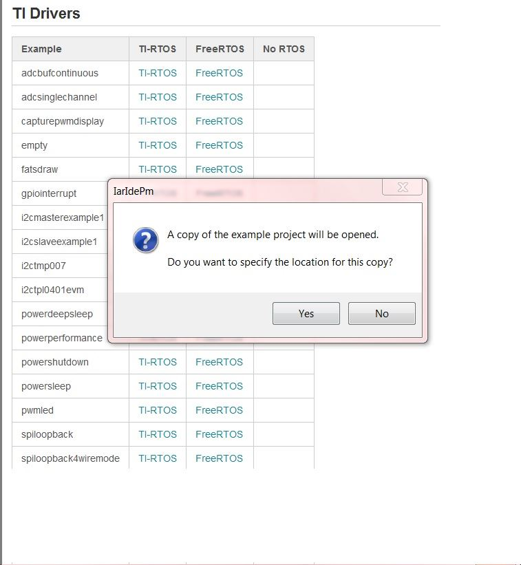Figure 25. Copy Workspace
If Yes, browse to the location where you want to save this workspace. Click
Choose
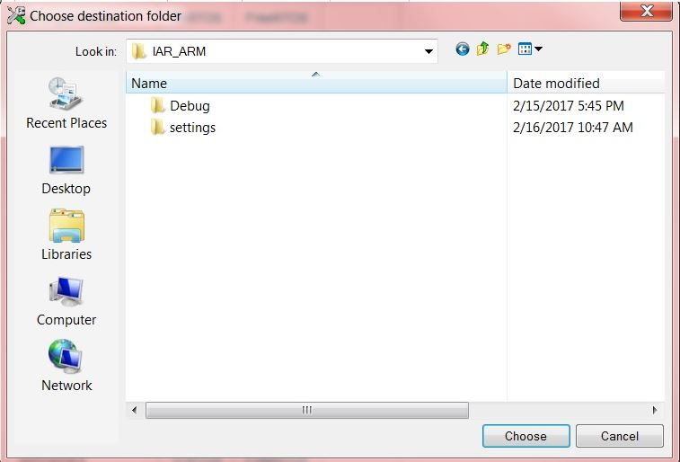Figure 26. Choose Workspace Location
By default, the project Debug settings is configured for TI XDS110, but the user may change them as needed by right-clicking on the Project name and selecting “Options”.
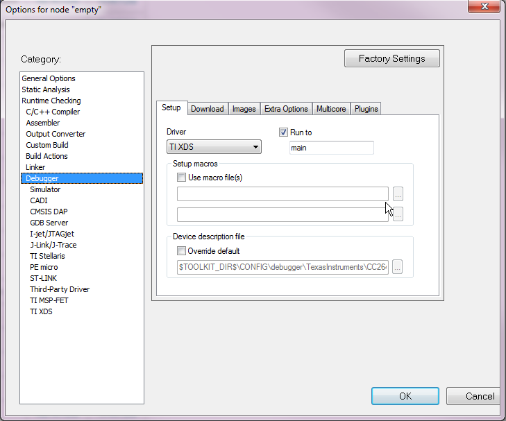Figure 27. Debugger Setup
If your CC26x2 LaunchPad is missing the TDO and TDI jumpers on the debugger header jumper block, select cJTAG as your XDS110 Interface as shown below.
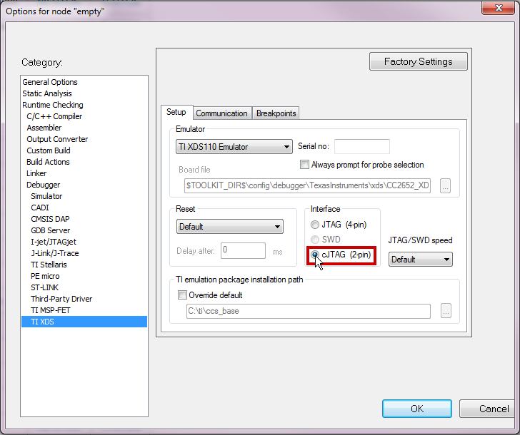Figure 28. TI XDS Setup
Your workspace should now contain the empty example project and its
dependent kernel project.
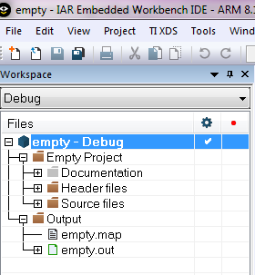Figure 29. IAR Workspace
Build and Download Project¶
Select Project -> Make to Make/Build the Example Project (Shortcut
F7). This will build both theemptyproject and its dependent kernel project.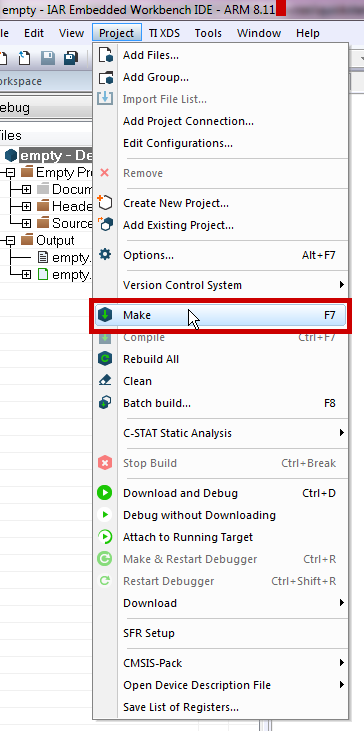Figure 30. Build Example Project
Plug in the CC26x2 LaunchPad using the provided Micro USB cable
Select Project -> Download and Debug (Shortcut
Ctrl + D)Once the debugging session opens, click the
Runbutton. The red LED should begin blinking. Continue on to the Running the Demo section for more information about using theemptyproject.
Using TI Drivers Projects with Makefile¶
The SDK examples and RTOS configuration projects ship Makefiles in addition to IDE specific projects.
Update imports.mak¶
Note
If you have installed any tools outside of the default install path, update
the top level <SDK_INSTALL_DIR>/imports.mak to point to the actual
install locations on your machine
Build Project¶
If you are using an RTOS based example, the RTOS config must be built first. The makefile for RTOS config are available in
<SDK_INSTALL_DIR>\kernel\<tirtos/freertos>\builds\<DEVKIT>\<debug/release>\<ccs/gcc/iar>
For example: <SDK_INSTALL_DIR>\kernel\tirtos\builds\<DEVKIT>\debug\gcc\makefile
- Identify and build makefile for kernel project
Navigate to the kernel project makefile directory and call the gmake.exe from the supported version of xdctools as shown below:
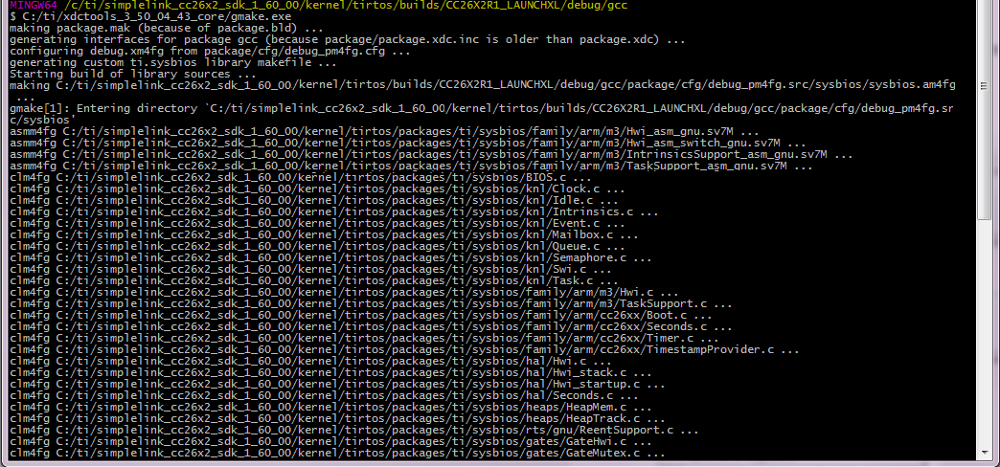Figure 31. Make Kernel Project
2. Identify and build makefile for empty project
Navigate to the directory that contains the makefile for the project you wish
to build. The TI Drivers project makefiles are configured to use the Release
kernel configuration by default. If you want to use the debug kernel build,
edit the makefile as shown below:
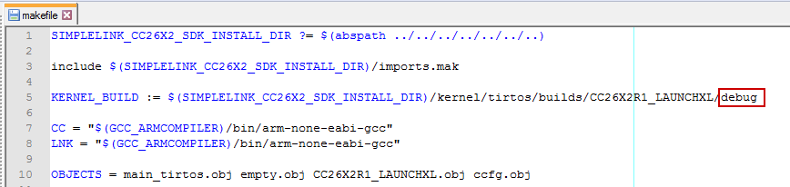Figure 32. Edit makefile to use Debug Kernel
Call gmake.exe from the supported version of xdctools as shown below:
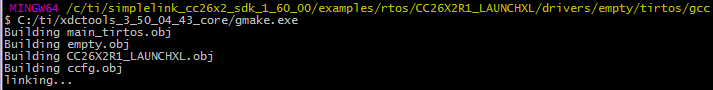Figure 33. Make Project
Download Project¶
The empty.out file that was created during the Build Project step can be
downloaded to your CC26x2 LaunchPad using Uniflash.
Open Uniflash. If your CC26x2 LaunchPad is connected, Uniflash will automatically display the type of device you are using. If your CC26x2 LaunchPad is not connected, connect it now and select Start.
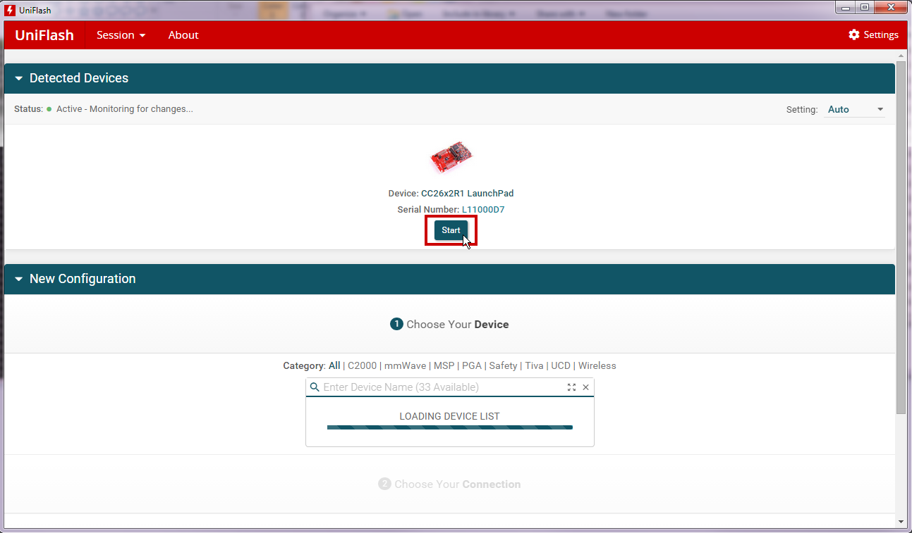Figure 34. Uniflash Introduction Screen
When the programming session starts, select the Browse button and navigate to
the empty.out imgae that was created during the Build Project step.
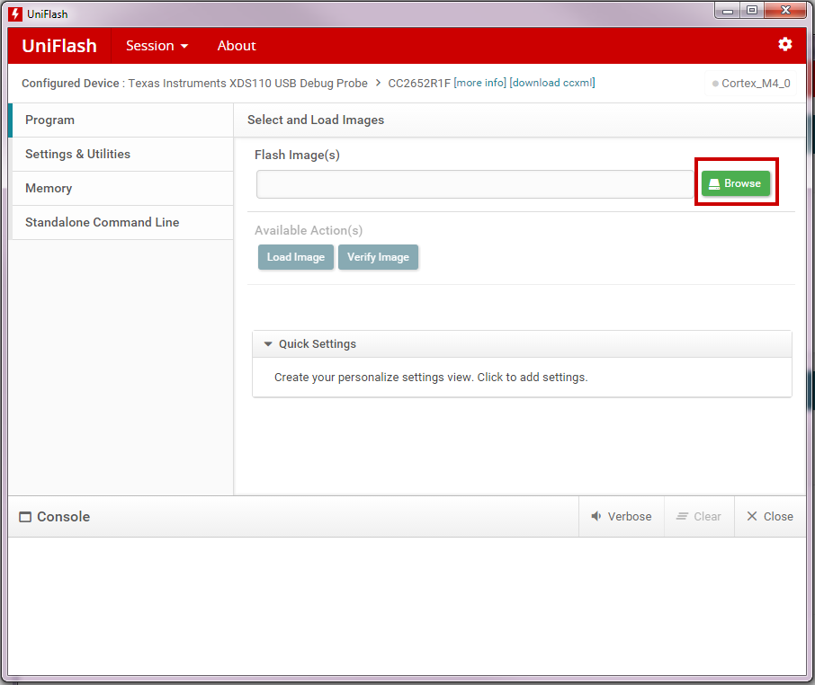Figure 35. Select File to Load
When you have selected your image, click Load Image to download the empty.out
image to the CC26x2 LaunchPad.

Figure 36. Load Image to LaunchPad
Continue on to the Running the Demo section for more information on the project.
Running the Demo¶
The empty example lights Board_GPIO_LED0 as part of the initialization in
the mainThread(). This thread then toggles the LED at a rate determined by the
arg0 parameter.
Modify the toggle rate by changing the time variable. The LED will blink at
a faster or slower rate depending on the value used.
Learning More About TI Drivers¶
- SimpleLink Academy www.ti.com/simplelinkacademy
SimpleLink Academy provides a comprehensive set of training tools that allow users from beginners to experienced developers to learn about the SimpleLink MCU Platform.
SimpleLink Academy contains modules written to demonstrate the rich debug environment and peripheral driver capability provided by TI-RTOS.
- TI-RTOS Kernel Workshop www.training.ti.com/ti-rtos-kernel-workshop
This material teaches users who are new to TI-RTOS or any RTOS programming in general about TI’s RTOS kernel implementation.
Learn how the TI-RTOS provides the most optimal power management and design flexibly.
- TI Drivers API Guide
The TI Drivers API Guide should be used to help guide development and
understanding of API usage. This guide is located in the docs\tidrivers\
directory of the SDK.
Developing a New TI Drivers Based User Application¶
Start with one of the example projects or empty project template shipped inside the SDK. Each software component in the SDK comes with its own set of examples. If your project depends on multiple TI provided software libraries, start from the empty template then add the necessary components into your projects.
Import the empty project template to your IDE and start your application from there. All the necessary include paths and SDK specific defines if any are already part of the Empty Project Template
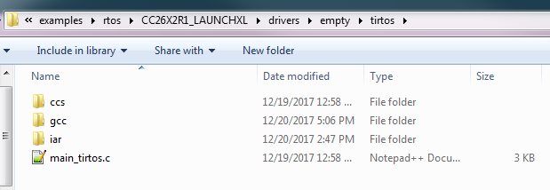Figure 37. TIRTOS Based Empty Project Template
Attention
Do not use the Rename option found inside CCS to rename your project.
This may change certain build parameters and not others, which can lead to
build errors and is irreversible.
To rename a project, you should use the Copy and paste options found
inside CCS. As you Paste the project, you have the option of choosing a
new project name. This process is to be repeated for the target project and
its dependencies.
After pasting both project, you need to modify the target project’s properties and update its “Project Reference” (need to show advanced settings) to only select newly pasted dependency project.
Getting Support¶
E2E Forums
This archived forum contains many frequently asked questions relating to TI Drivers. You can browse questions from other developers which may provide helpful solutions to similar problems.
If you cannot find the answer to your question in the TI-RTOS Forum, you can
ask a new question related to the CC26x2 by selecting the + New button at
the top right of the e2e screen.
Figure 38. Make a new E2E post